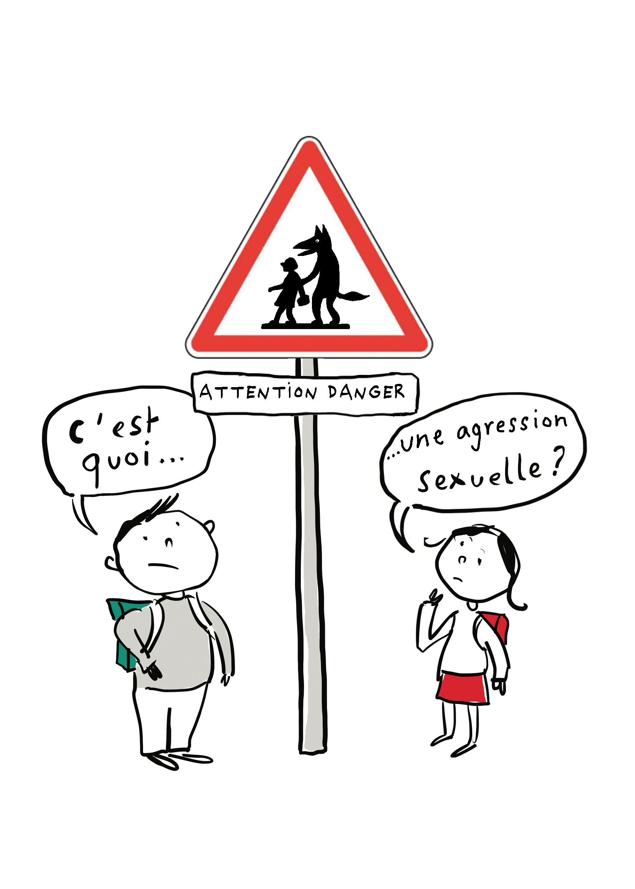
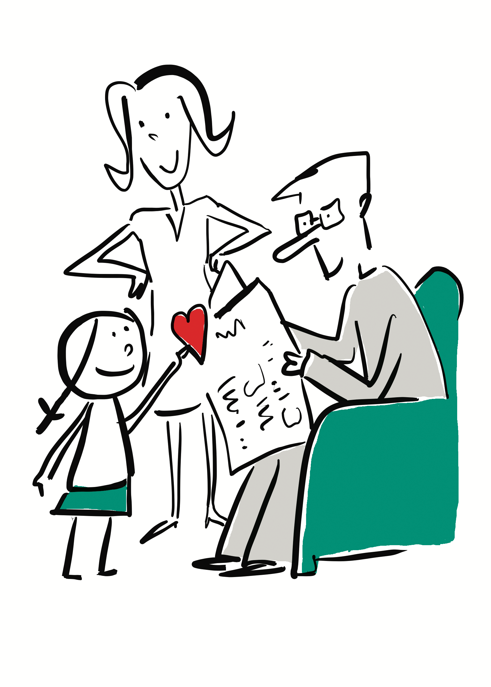
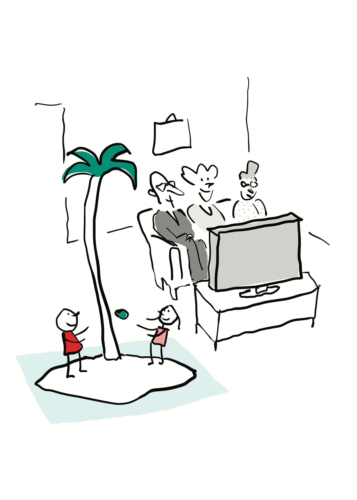
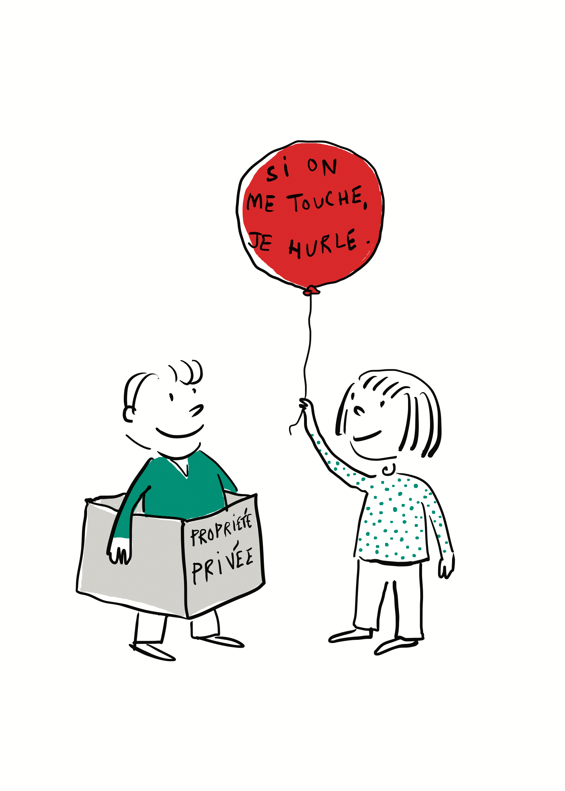
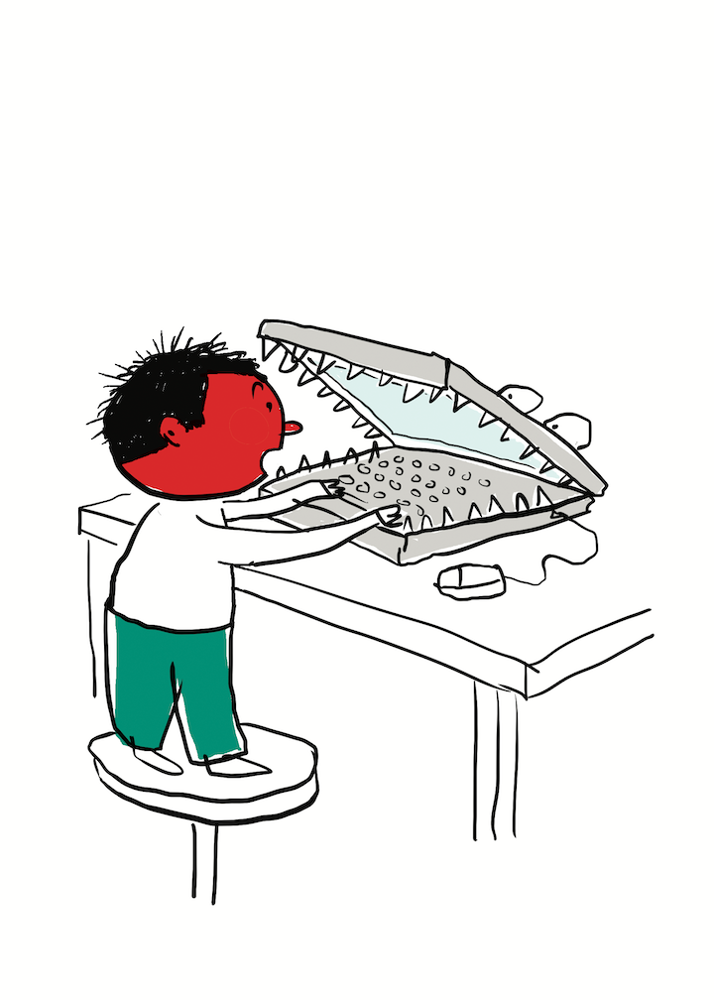
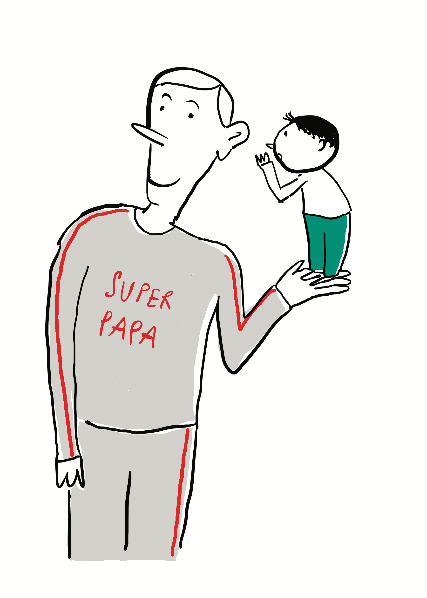
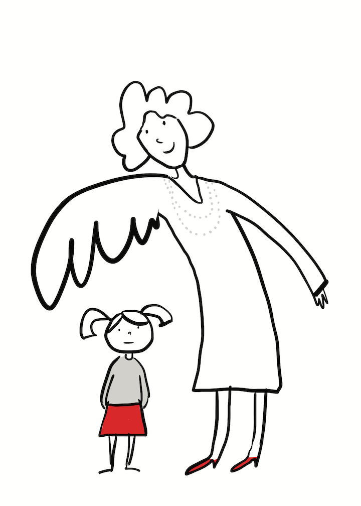

1- Pourquoi parler des agressions sexuelles ?
Pas facile d’aborder cette question avec un enfant. Pourtant il faut lui en parler et le rassurer en lui disant que les adultes sont là pour le protéger.
Un enfant ne peut imaginer ce qu’est la sexualité. Il découvre en grandissant qu’il est fille ou garçon, qu’il y a des parties du corps qui sont privées et que les câlins qu’on fait à un enfant n’ont rien à voir avec la sexualité entre adultes.
Pour l’aider à s’en défendre, il doit comprendre que parfois l’agression se déguise en gentillesse. Même si c’est rare, il existe des pédophiles, des gens malades dans leur tête, qui peuvent lui faire du mal en lui faisant en cachette des gestes sexuels qui ne sont pas de son âge. Contrairement à ce que l’on croit, l’agression vient rarement des personnes inconnues mais généralement de quelqu’un que l’enfant connaît bien et qui abuse de sa confiance. C’est important de lui expliquer que personne n’a le droit de lui faire ça !
En sachant ce qu’est une agression sexuelle, l’enfant reconnaîtra mieux les situations qui ne sont pas normales. Il en parlera plus facilement si ça lui arrive.
Avec des mots et des images simples, ce site propose de vous aider à repérer les situations à risque, à savoir les éviter et à en parler ensemble. La brochure adultes explique comment en parler à l’enfant, comment l’écouter, comment réagir, comment se faire aider.
La brochure enfants, Le Permis de prudence, est un petit test à donner aux enfants à partir de cinq ans pour leur apprendre à bien réagir dans des situations dangereuses, à savoir ce qui est autorisé ou interdit, et pour en discuter avec eux.
Un enfant averti aura moins peur d’en parler !
Parler de sexualité avec l'enfant
L’éducation sexuelle se fait naturellement au cours de la vie quotidienne. Laissez-le poser des questions, demandez-lui ce qu’il imagine.
La toilette, le bain sont des moments de découverte du corps et de la différence des sexes. C’est normal qu’un enfant soit curieux, cela l’intéresse, essayez de lui répondre sans gêne ! Expliquez-lui comment son corps fonctionne, que son corps lui appartient, qu’il a droit au respect et à la protection des adultes. Adaptez vos réponses à son âge.
Tout petit, l’enfant découvre que c’est agréable de toucher son sexe. Vers 4/5 ans, expliquez-lui que son sexe est un endroit privé, qu’il ne doit pas le montrer ou le caresser tout le temps. On doit le laver tout seul et on ne s’en sert vraiment que quand on est grand et amoureux…
Quand les enfants jouent au docteur, on voit bien qu’il s’agit d’une curiosité normale si l’ambiance est celle d’un jeu et s’il n’y a ni contrainte ni violence. Il faut s’inquiéter si un enfant en force un autre et l’oblige à se déshabiller en prétextant que c’est un jeu.
« Quand je serai grande, je me marierai avec toi, papa ! »
Comment répondre aux enfants ? Profitez de ce genre de phrase pour parler de sexualité, de ce qui est permis et interdit entre adultes et enfants.
« Comment on fait les bébés ? »
Ne leur donnez pas qu’une réponse anatomique, ils se renseignent aussi sur l’origine de la vie, pourquoi les parents ont voulu qu’ils naissent. Répondez à leurs questions selon leur curiosité, leur niveau de compréhension…
la place de l'enfant
L’enfant est une personne mais pas une grande personne. S’il est curieux du monde des adultes il ne le comprend pas toujours.
Attention de ne pas le confronter à des situations qui le choquent : les disputes entre adultes, les images violentes, la nudité. Ça peut l’impressionner et lui faire peur.
Ne partagez pas votre vie privée avec votre enfant. Après 2/3 ans, ne vous montrez plus tout nu devant lui.
Aidez l’enfant à comprendre la différence des sexes et des générations. Vous pouvez lui parler de la nature, des âges de la vie, des personnes de sa famille : les papas, les mamans, les frères et sœurs, les grands-parents, les beaux-pères, les belles-mères, les demi-frères et les demi-sœurs… les plus jeunes, les plus grands, les ados et les bébés. Si chacun a sa place, l’enfant comprend que chaque âge a ses plaisirs : jouer, travailler à l’école, sortir avec ses copains, avoir un amoureux ou une amoureuse.
On ne doit pas lui demander de se comporter comme un adulte. On doit le respecter en tant qu’enfant. Ainsi, il pourra plus facilement savoir ce qui est normal et ce qui ne l’est pas.
DES PARENTS, PAS DES COPAINS !
Dans la famille, les parents sont les responsables naturels de la santé et de la sécurité de leur enfant. Ils transmettent les valeurs auxquelles ils croient. Ce sont des exemples pour l’enfant, dans leurs paroles et dans leurs comportements. C’est avec eux qu’il apprend le vivre-ensemble.
comment l'aider sans le sur-protéger ?
Penser que votre enfant peut se faire agresser n’est pas facile… mais il aura moins peur s’il sait quoi faire.
Apprenez-lui à trouver de l’aide par lui-même si on l’embête. Il ne doit pas parler aux inconnus et il doit refuser de les suivre. Il doit oser en parler si quelqu’un veut toucher son sexe même si c’est quelqu’un qu’il connaît bien.
Des règles de sécurité claires aident l’enfant à être sûr de lui et indépendant : il peut alors rester spontané et affectueux.
Donnez-lui des explications simples sur les situations anormales ou dangereuses. Parlez-lui, par exemple, de la différence entre quelqu’un qui lui fait des caresses en secret et quelqu’un qui le prend dans ses bras devant tout le monde. Dites-lui qu’il peut dire « non » ou changer d’avis si un jeu dérape, si ça va trop loin ou s’il a un doute.
En général, quand vous le sentez triste ou inquiet, écoutez-le sans reproche pour lui montrer votre confiance. Intéressez-vous à son point de vue, à ce qu’il pense. S’il n’a pas peur d’être grondé ou que l’on se moque de lui, il osera parler de ce qui le tracasse.
EXPLIQUEZ-LUI CLAIREMENT COMMENT SE PROTÉGER.
- Dites-lui qu’il a le droit de refuser les propositions d’un adulte ou d’un grand même s’il le connaît bien, que ce n’est pas malpoli et que vous ne le gronderez pas.
- Donnez-lui les noms et les téléphones des personnes qu’il peut appeler en cas de problème.
- Dans la rue, s’il se sent en danger ou si quelqu’un l’embête il peut trouver refuge dans le magasin le plus proche ou se faire accompagner par un copain.
Ce qu'il a besoin d'entendre…
Pour lui donner des limites claires, vous pouvez lui dire :
« Sers-toi de ce que tu ressens…
Les sentiments désagréables ou bizarres t’avertissent que quelque chose ne
va pas. Tu peux te fier à ce que tu ressens. Tu ne dois pas hésiter à te
confier à des adultes jusqu’à ce qu’on te croie… »
« Il y a des caresses permises et des caresses défendues…
Il y a des caresses qui font plaisir et qui sont agréables mais il y en a
d’autres qui sont bizarres, qui font peur. Les adultes n’ont pas le droit
de passer la main sous tes vêtements et s’approcher de ton sexe, de toucher
tes seins ou tes fesses ! »
« Il y a des bons et des mauvais secrets…
Il y a des secrets qu’on aime partager, et qu’on fait pour jouer. Les
enfants ne devraient pas avoir des secrets lourds à porter. Si on t’impose
un secret, qu’on te menace ou qu’on te fait du chantage, il faut que tu en
parles à quelqu’un, même si tu avais promis de ne rien dire au début ! »

GRÂCE À MA BOUSSOLE, JE SAIS OU ALLER !
Si quelqu’un lui demande de le suivre, dites-lui qu’il doit se poser ces trois questions :
- Est-ce que tu as envie de dire « oui » ou « non » à cette proposition ?
- Est-ce que tes parents sauront où tu es, si tu acceptes ?
- Est-ce que quelqu’un viendra à ton aide, si tu en as besoin ?
S’il répond Non à une seule question, il ne doit pas accepter de le suivre.
(programme canadien, Mon corps c’est mon corps.)
L'aider à être prudent sur internet
L’enfant croit qu’il est en sécurité chez lui derrière un écran et qu’il connaît ceux avec qui il communique, mais il peut entrer en contact avec des gens malveillants. Expliquez-lui qu’il existe des pièges, des faux-amis, des arnaques, des images pornos et des pédophiles…
Il faut lui dire de ne pas donner son adresse personnelle, de ne pas accepter d’invitation secrète, qu’il ne doit pas accepter de se montrer nu devant un écran. Il doit savoir que les textes et les images qu’il envoie, même en conversation privée, peuvent être filmés et récupérés pour se moquer de lui ou le racketter.
Apprenez-lui à respecter le droit à la vie privée de ses amis, à ne pas diffuser leurs photos ou leurs paroles sans leur autorisation. Parlez avec lui de ses amis et contacts sur Internet. Dites-lui d’être prudent, de ne pas communiquer avec des gens qu’il ne connaît pas et de vous parler s’il y a un problème.
Que dit la loi ? Montrer des images pornos à un enfant, avoir sur son téléphone ou diffuser des images pédophiles avec des jeunes de moins de 18 ans est interdit et puni sévèrement.
POSEZ-LUI DES QUESTIONS !
« Sais-tu que les images que tu mets en ligne sont accessibles à tous et peuvent être utilisées contre toi ? »
« Sais-tu que certains jeux vidéos sont interdits aux mineurs à cause de leurs images sexuelles et parce qu’ils donnent de mauvais exemples, comme la prostitution ? »
« Sais-tu que les images pornos sur Internet, à la télé ou dans les jeux vidéos montrent parfois une sexualité qui n’est pas vraie ? »
Les abus sexuels sont interdits !
Les agressions sexuelles ou abus sexuels sont des actes très graves par lesquels un adulte ou un plus grand, pour son plaisir, oblige un enfant à un acte sexuel qui n’est pas de son âge. C’est un abus de pouvoir, c’est une agression. Les agressions sexuelles ou « abus sexuels » sont : l’exhibitionnisme, l’initiation sexuelle avec des images pornos, les attouchements, le viol. Utiliser la nudité de l’enfant pour des images pédo-pornographiques ou prostituer des enfants pour de l’argent sont aussi des abus sexuels.
Les victimes sont-elles uniquement des filles ?
NON ! Les garçons aussi en sont victimes.
Les abus sexuels n’existent-ils que dans les milieux défavorisés ?
NON ! Toutes les classes sociales sont concernées.
Un abus sexuel est-il toujours obtenu par la force ?
NON ! Il est très souvent obtenu par la séduction, des cadeaux, du
chantage, le plus souvent en exigeant le secret.
Les abus sexuels sont-ils uniquement commis par des pédophiles rencontrés dans la rue ?
NON ! Ces actes sont commis le plus souvent par des hommes proches de
l’enfant, même parfois par des adolescents dans le cadre familial ou
éducatif. On parle d’inceste pour les abus commis par un membre de la
famille (par exemple : père, beau-père, frère, cousin, oncle, grand-père).
LES ABUS SEXUELS SONT PUNIS PAR LA LOI.
La condamnation est plus sévère quand la victime est un enfant de moins de 15 ans ou si l’agresseur est un parent ou un éducateur qui est une personne ayant autorité sur l’enfant. Pour un crime de viol elle peut aller jusqu’à 20 ans de prison et 150 000 euros d’amende. Pour les agresseurs ou les gens qui ressentent des pulsions pédophiles, il existe des consultations spécialisées pour se soigner.
les adultes sont là pour le protéger.
L’enfant peut avoir peur, être en colère, ou être gêné de dire ce qui lui arrive. Parfois, il peut penser qu’il a fait quelque chose de mal. Ne le grondez pas en lui disant qu’il n’aurait pas dû se laisser faire ou qu’il aurait dû vous en parler plus tôt. Montrez-lui que vous lui faites confiance, il se confiera plus facilement, et dîtes lui que vous allez l’aider.
S’il vous en parle, laissez-le parler librement, utilisez les mêmes mots que lui. Soyez attentif à l’ambiance de ce qu’il décrit.
L’enfant ne s’exprime pas toujours avec des mots. Son comportement peut être évocateur d’abus sexuels. Ça peut être un changement brutal dans sa manière d’être (il n’est plus propre, il dort mal, il n’a plus faim ou il mange trop, il est triste et se dévalorise…) ou des conduites sexuelles et des mots trop crus qui ne sont pas de son âge. Parfois, il n’en parle pas tout de suite mais, d’un seul coup et sans raison, il refuse d’aller chez des amis, un voisin ou quelqu’un de la famille. C’est sa façon à lui d’envoyer un signal.
ÉCOUTEZ-LE !
Quand un enfant vous parle d’une situation évoquant une agression sexuelle, il ne sait pas forcément vous dire comment ça s’est passé et qui l’a agressé. Il a besoin de temps et peut avoir du mal à vous expliquer. Ecoutez-le sans le harceler de questions, sans chercher à avoir des détails tout de suite, sans avoir l’air affolé.
quand l'enfant se confie…
Après l’avoir écouté, félicitez-le. Expliquez-lui que ce qu’il a dit est important et qu’il a bien fait d’en parler. Dites-lui que ce n’est pas de sa faute. Rappelez-lui pourquoi les agressions sexuelles sont interdites. N’hésitez pas à écrire ce qu’il vous a dit pour vous en souvenir !
On n’a pas le droit de laisser un enfant en danger et dans la peur de parler ou la peur des menaces. Si on sait qu’un enfant est en danger, on doit le signaler tout de suite pour que la situation s’arrête au plus vite.
Il faut lui dire clairement que vous ne pouvez pas garder pour vous des choses aussi graves.
Pour éviter des complications psychologiques dans l’enfance ou à l’âge adulte tout enfant victime d’agression sexuelle doit être vu rapidement par un médecin pour qu’il puisse l’examiner et voir comment il réagit à ce qu’il a subi.
Ce n’est pas toujours évident de savoir à qui demander des conseils. Le plus compliqué est de faire le premier pas, surtout quand l’agresseur est quelqu’un de la famille. Inutile d’en parler à tout le monde pour respecter la pudeur de l’enfant mais osez en parler à quelqu’un de proche. Ça peut donner des pistes pour trouver de l’aide et vous réconforter… ne vous découragez pas et surtout ne restez pas seul !
À QUI S’ADRESSER ?
Des professionnels sauront vous écouter et vous orienter :
- votre médecin, votre pédiatre, le médecin des urgences.
- le centre de consultation médico-psychologique pour enfants.
- L’antenne du conseil départemental (UTPAS), à la mairie.
- Les associations de protections de l’enfance.
- L’école : la directrice, la maîtresse, l’assistante sociale, l’infirmière et le médecin scolaire.
- La brigade des mineurs (police) ou la gendarmerie nationale.
- Le 119, numéro vert, anonyme et gratuit.